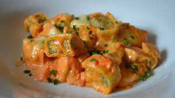

Maultaschen mit Tomatensauce

Beschreibung
Leckeres und einfaches Essen für eine oder mehrere Personen.
Zutaten
- 12x Maultaschen
- 1x Dose gehackte Tomaten
- 1x Dose Kokosnussmilch
- 1x Zucchini
- 1x Zwiebel
- 1x Zehe Knoblauch
- Verschiedene Gewürze
Zubereitung
- Große Pfanne mit Öl für die Maultaschen erhitzen. Topf für die Sauce mit Öl erhitzen.
- Sobald die Pfanne bei mittlerer Hitze ist Maultaschen von beiden Seiten goldbraun anbraten.
- Zwiebel und Zucchini kleinschneiden. Knoblauch schälen.
- Zunächst Zwiebeln anschwitzen. Dann Zucchini hinzufügen. Sobald die Zucchini goldbraun sind Knoblauch dazupressen.
- Mit gehackten Tomaten und Kokosnussmilch ablöschen und kurz köcheln lassen.
- Gewürze nach eigenem Belieben hinzufügen: Pfeffer, Salz, Basilikum, Oregano, Kreuzkümmel und Paprikagewürz.
- Die Maultaschen hinzufügen und 10 Minuten Köcheln lassen.
- Fertig